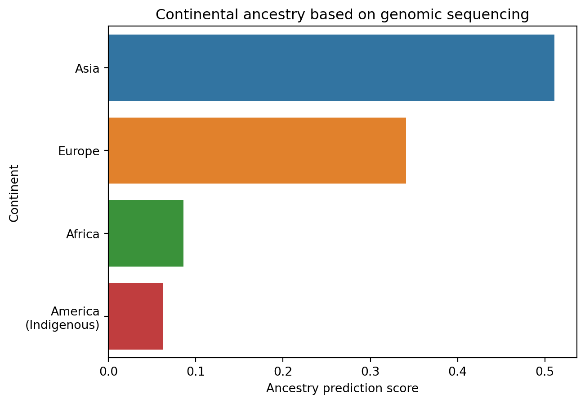
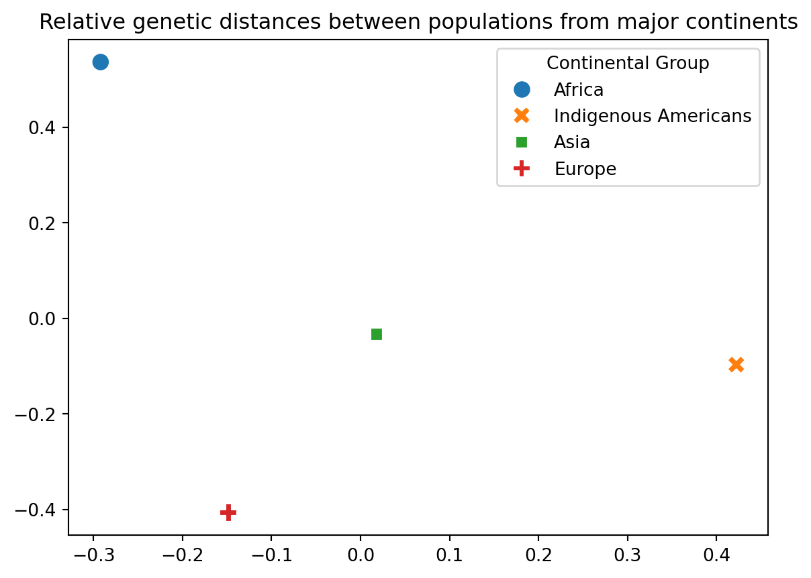
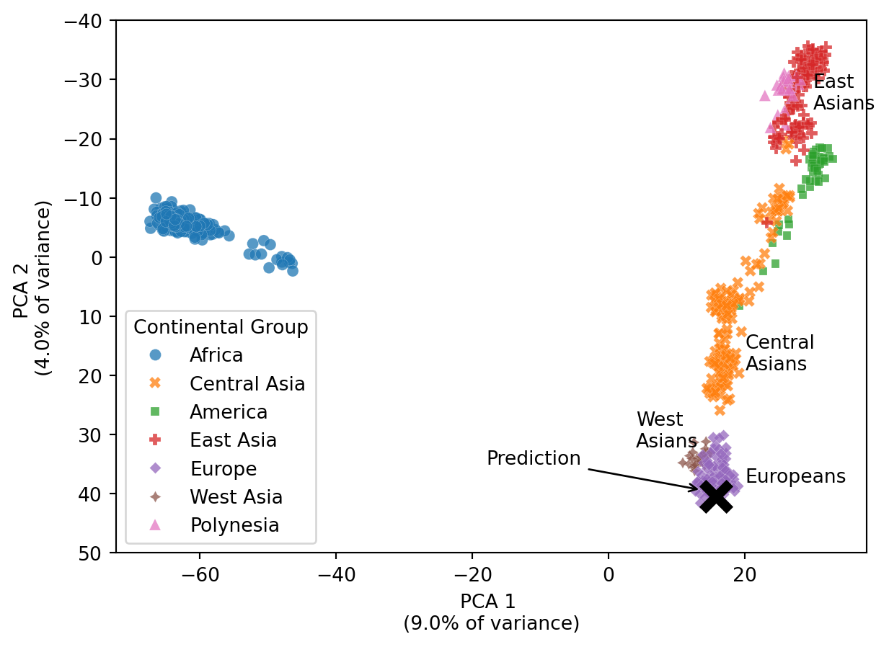
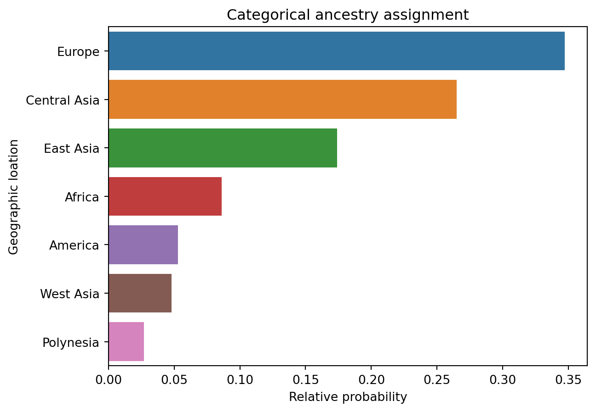

Deep Learning about deep ancestry
Nathan L. Brouwer, PhD
Genetic testing services use a combination of advanced DNA sequencing and machine learning to characterize a person’s deep heritage
In the last 20 years, using DNA to charaterize people’s ancestry has become a multi-billion dollar industry, with millions of American’s having had their genomes sequenced by ancestry services like 23andMe and Ancestry.com. People now routinely contemplate results like those in the table below, with their family’s history rendered with apparent mathematical precision. But how exactly can a small sample of cells in a test-tube be converted to numbers that somehow represent people’s heritage, ancestry, and parentage?
The technology that makes modern genomic ancestry assessment possible is a combination from multiple fields, including advanced DNA sequencing, genome science, and machine learning. While you can’t sequence your own genome (yet), it takes only a moderate amount of computer programming skills and some open-access data to see how companies like 23andMe and Ancestry.com do their magic.
In this article I will use Python to
- 🧬 Briefly explains what raw genomic testing data looks like
- 🌍 Introduce the types of population-scale genome data needed to understand human ancestry
- 🤖 Give an overview of machine learning models used in genomics
- 📊 Show how a person’s ancestry can be predicted using a machine-learning model
Additional articles will present more in depth how these data are processed and results created.
🧬 Consumer genomics data
Direct-to-consumer genomic testing services typically provide a thorough set of results, as well as access to your own raw data. While the reports provided by companies can be very flashy, the raw data for a single person is rather under-whelming, as we can see when its loaded into Python:
| # rsid | chromosome | position | genotype | |
|---|---|---|---|---|
| 0 | rs10034228 | 4 | 112611750 | CC |
| 1 | rs560766 | 15 | 35000942 | GG |
| 2 | rs939661 | 15 | 79431063 | AG |
This small snapshot of data is froom 23andMe, but is similar to genomic data from other services as well as that produced by researchers. Each row of these data represent a position in the human genomes where people frequently vary from each other, with the genotype indicating what the sequence is for the person’s DNA being examined. Two letters are shown, one for each of the person’s parents. “CC” in the top row means that for this place in the genome, the person recieved a “C” DNA base from both parents. In contrast, the “AGs” on the third row indicates that they inherited an “A” DNA base from one parent and a “G” from the other. For any given row there are 3 possible combinations of letters that can occur in differnet people. For example, for the AG row, somewhere in the world there are poeple who are AA and others who are GG.
To carry out genomic analyses, these data have to be converted to numbers. For our analysis, we’ll use a simple number system where each of the three combinations that can occur on a row are coded 0, 1 or 2. In the case of the AG rows, “AG” would be coded as an intermediate value of 1, while AA and GG would be coded as 0 and 2. This results in our snapshot of data looking like this:
| # rsid | chromosome | position | genotype | |
|---|---|---|---|---|
| 0 | rs10034228 | 4 | 112611750 | 2 |
| 1 | rs560766 | 15 | 35000942 | 0 |
| 2 | rs939661 | 15 | 79431063 | 1 |
It is important to point out that genomic data is truly “big data”. For example, data from 23andMe for one person contains over 900,000 rows! This may seem huge, but its actually less than 0.05% of the size of the human genome.
🌍 Population genomics data
In order to characterize someone’s ancestry we must have a database of many people from around the world to compare them too. While consumer genomics companies have compiled their extensive but proprietery databases, there are also open-access datasets available for anyone to use. The largest public database is the 1000 Genomes Project (1KGP), which contains genomic information on ~2500 people from 25 populations around the world. 1KGP data has been used in hundreds of scientific papers and can be accessed freely by anyone.
Unfortunately, 1KGP data is a bit unwieldly to access without specialized software; luckily, subsets of the data have been posted by some researchers. In this artile, I’ll use data provided by researchers from the University of Utah. This study, led by Jinchuan Xing and Lynn Jorde, integrated data from the 1000 Genomes Project with data from Jorde’s lab, resulting in a database of genomic data with 850 people from 40 different populations. For each person in the dataset, they had genomic data similar to that shown above from 23andMe.
After being prepared for analysis, the data from 5 people for 5 places in their genomes would look like the table below. Each person is in a column, and each row contains a number representing their original DNA sequence. In total, Xing and Jorde’s study. If two people have many of the same values accross the rows, then they are possiblly from the same or similar populations.
| UID | person01 | person02 | person03 | person04 | person05 |
|---|---|---|---|---|---|
| rs6680471 | -0.8 | -0.8 | -0.8 | -0.8 | 0.6 |
| rs3737593 | 1.6 | -0.5 | -0.5 | 3.6 | -0.5 |
| rs10915495 | -0.6 | 0.8 | 0.8 | 0.8 | 2.3 |
| rs639739 | 1.0 | 2.6 | 1.0 | -0.6 | -0.6 |
| rs780587 | 1.5 | 1.5 | -0.5 | -0.5 | 3.6 |
🤖 Machine learning and genomics
Most machine learning models have applications in population genomics, including dimension reduction, clustering, and supervised classification. Biologists interested in human evolutionar are particularly exploring how Deep Learning methods can reveal insights into human history. While the methods used by consumer genomics companies and researchers are complex and tailored to the complexities of genomic data, we can use “off-the-shelf” tools from data science and machine learning to understand how more advanced models reach their conclusions.
Regardless of methods, we face two challenges when analyzing genomic data. First, there’s typically lots of data, with information on hundreds of peole from thousands of places in the genome. Second, each place in the genome serves as a feature (aka variable) of our analysis. In the previous table there were 5 rows and therefore 5 locations in the genome represented. The full dataset has over 10,000 rows.
Going the distance with DNA
How do you analyze data with 10,000 features, let alone make a plot representing the data? Analysis of such high-dimensinal data typically requires methods to represent the data in a simpler format, a process known as dimension reduction. One of the easiest method of dimension reduction is to calculate distance between each datapoint. In geometry class we learn to use the Pythagorean Formula to calculate the distance between two points on a sheet of paper. If we had a cruel teacher, we may have had to extend the formula to three dimensions. It turns out that – while we can’t necessarily visualize how it works – this formula can be extended beyond three dimensions to four, five, or even 10,000. We can similarly extend what we know about the average of a set of numbers and consider the multidimensional mean of a set of data.
The table below uses this logic to represent the average genetic distance between indvidiauls in major continental groups in Xing and Jorde’s dataset. First, the average genetic location of people from each continent is determined, and then the distnance between these mean locations calculate.
The largest value in the table is 107 in the Africa-Indigenous Americans rows and columns. The populations of these continents are geographically most distant, and genetically they are, relatively speaking, least similar or “most distant.” (It is very important add the caveat “relatively” because two humans are typically 98% the same in terms of DNA, and these numers focus only on the infrequent genetic differenes).
The smallest value on the table is 52, between Europe and Asia. These two continents are geographically contiguous with each other and their populations have remained the most genetically similar (least distant) depsite lignuistic and cultural change.
| Africa | Indigenous Americans | Asia | Europe | |
|---|---|---|---|---|
| Continental Group | ||||
| Africa | 0.0 | 107.0 | 86.0 | 90.0 |
| Indigenous Americans | 107.0 | 0.0 | 63.0 | 79.0 |
| Asia | 86.0 | 63.0 | 0.0 | 52.0 |
| Europe | 90.0 | 79.0 | 52.0 | 0.0 |
Once we have characterized the similarities and differences between populations, we can take an individual person’s DNA sample and compare it to the average locations of each continent. I did this for the DNA sample I introduced at the beginning of this article, and the smallest value is for Europe. This indicats that they are least distant and therefore most similar to the other people in the dataset from this continent.
| Distance | |
|---|---|
| Continental Group | |
| Africa | 149.0 |
| Indigenous Americans | 143.0 |
| Asia | 130.0 |
| Europe | 118.0 |
A picture is worth 10,000 genome locations
Because it has so many features, genomic data cannot be plotted using standard tools like scatterplots. Once we have a table of genetic distances, though, we can make a plot using the results of a process called NMDS (Non-metric Multi-Dimensonal Scaling).
NMDS turns a distance matrix into a set of x-y coordinates that preserves the relative distances between all sets of points. In the plots

There are many machine learning techniques that can be used to visualize high-dimensional genomics data. One of the most common tools used traditionally in population genomics is Principal Components Analysis (PCA). PCA is an unsupervised machine learning method which allows high-dimensonal data to be visualized in 2 or 3 dimensions. PCA scatterplots with 2 dimensions are called biplots, while those with 3 dimensions are triplots.
In the case of genomic data, information on individual DNA samples enters into the PCA and the lower dimensional data is then plotted. Dat points represent individuals people in the sample, and the points are color-coded based on the geographic location where the individuals are from. This allows PCA to serve as both a visualization and clustering approach.
Additionally, someone whose ancestry is not known or uncertain can have their data transformed by the PCA and plotted along with the other points. The location of the prediction relative to other data points indicates genetic similarity and potentially similar ancestry.
The figure below shows data from Xing and Jorde study discussed above after it has been processed through PCA. The data are color-coded by the large-scale geographic areas the samples are derived from. I then took a 23andMe record for a person with unknown ancestry and used my PCA model to estimate which samples from Xing this person is most similar to. Based on their location, they are most likely predominantly European ancestry.

📊 Ancestry predictions
PCA biplots are ubiquitous in scientific papers on population genomics and ancestry, often as a central figure. Consumer genetic companies, however, typically focus their results on assignment to one or more ancestry categories. We can carry out a similar assignment, known technically a multi-class classification, using standard tools in Python. In this Analysis, used a Random-forests classifier to gauge the relative probability that the person’ whose DNA sequence we’ve been working with fit into 1 of 7 possible geographic groups.

Delving deeper into ancestry and machine learning
The data and analyzes presented in this article should give you a sense for how consumer genomics companies are able to transform a sample of spit or cheek cells into a prediction about someone’s ancestry. Companies like 23andMe and Ancestry.com now how millions of people in their databases, reference samples from dozens of populations, and machine-learning and deep-learning algorithms tailored to their specific goals. Similar predictions about a person’s ancestry can be reached using standard machine learning tools. This makes genomic data an excellent place for data scientists explore and test different methods.